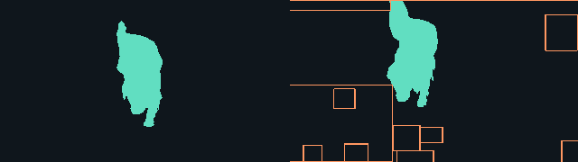

Human annotation: before (left), after (right). Orange boxes show the detector's regions projected onto the annotation. These diagrams contain no original camera pixels.

- Reference
- Foreground occupancy changed by 7.23% of image area.
- Detector
- 1 card(s). OpenCV found localized changes that are reviewable without an immediate escalation.
- Next action
seal_evidence_for_agent_summary
Inspect exact evidence
[
{
"change_score": 0.098204,
"changed_regions": [
[
0,
0,
299,
30
],
[
0,
0,
854,
480
],
[
756,
42,
95,
107
],
[
0,
250,
305,
228
],
[
131,
262,
63,
59
],
[
306,
370,
80,
76
],
[
387,
375,
66,
47
],
[
804,
416,
50,
64
],
[
162,
425,
71,
55
],
[
41,
429,
55,
51
],
[
316,
444,
110,
36
]
],
"frame_index": 1,
"frame_sha256": "2a84b45a7764cc6fa2394792df0473b8622f5b60a0f18ba642ca8fda21425d4a",
"previous_sha256": "fd0677f57a9da6a1e84872bafa2a5006466728c7d158bf160d7870927f71a357",
"timestamp_ms": 1000
}
]